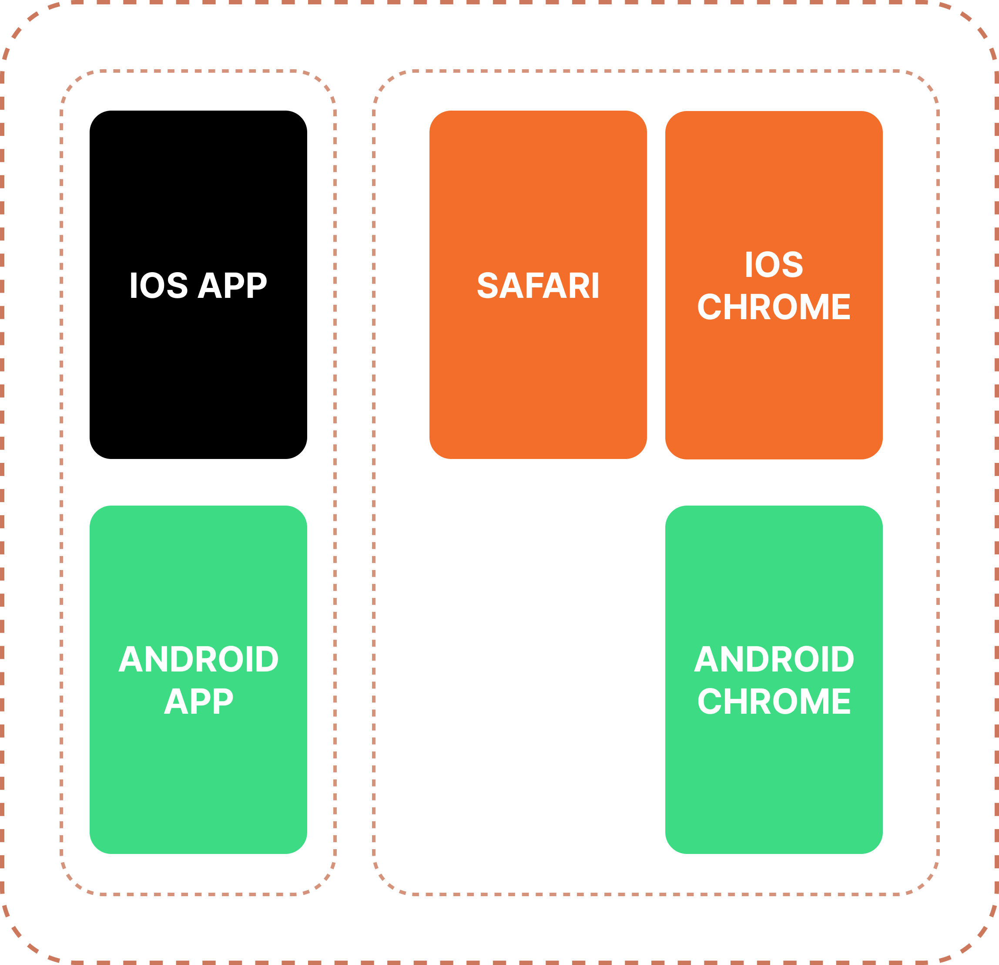
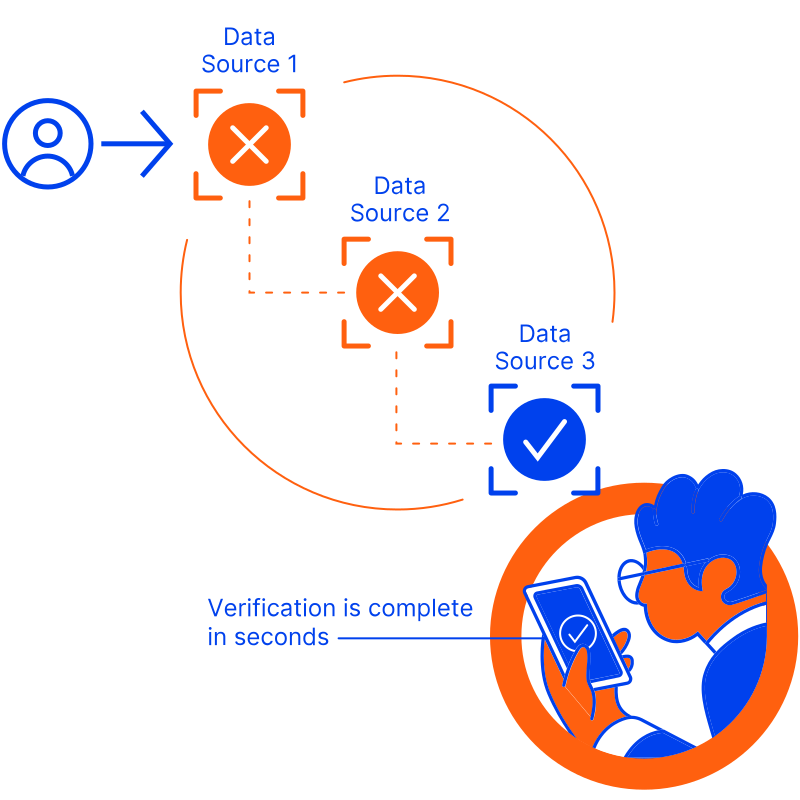

0-to-1 product definition
I helped turn fragmented requirements and ambiguous product direction into the first working version of IDComply.
GeoComply | Identity verification platform
Building and scaling a global identity verification platform from an ambiguous product idea into a unified onboarding ecosystem across Web, Android, and iOS.
Case Study Highlights
I helped turn fragmented requirements and ambiguous product direction into the first working version of IDComply.
I audited and unified onboarding experiences across Android, iOS, Web, and operational systems.
I worked closely with PMs, engineers, QA, operational stakeholders, and compliance-driven teams.
The platform expanded from the US into UK, Europe, Brazil, and Mexico with a more scalable UX foundation.
Overview
IDComply is an enterprise identity verification and fraud prevention platform designed to help businesses streamline onboarding, reduce fraud risk, and improve compliance workflows across regulated markets.
The platform combines identity verification, KYC/AML workflows, device intelligence, fraud signals, geolocation verification, and operational monitoring into a unified onboarding and operational ecosystem.
My Contribution
Product Ecosystem
Verify identity by comparing personal details such as date of birth, address, name, and SSN against authoritative sources.
Validate personal details with mobile carriers and screen the number for any prior fraudulent activity.
Verify and validate any email address within one request.
Monitor risk in real time, including PEP, OFAC, HIO, sanctions lists, and criminal records.
Prevent fraudulent activity such as multi-accounting, bonus abuse, identity theft, account takeover, and more.
Automatically verify high-risk customers with photo ID and selfie checks in a snap.
Verify users with out-of-wallet questions pulled from their official credit records. KBA is only required in some U.S. states.
CfA is a frictionless authentication solution that fulfills enhanced KYC requirements and prevents fraud early using advanced geolocation technology and gaming insights.
Business Context
GeoComply needed a product that could support multiple markets, multiple verification methods, enterprise onboarding workflows, fraud prevention operations, and global compliance requirements.
The product also needed to improve onboarding conversion, reduce operational friction, provide better mobile experiences, and scale into new international markets.
Identity verification is not a simple linear onboarding form. It is a complex ecosystem of verification methods, risk signals, fraud detection logic, operational review flows, regional compliance requirements, platform limitations, edge cases, and fallback scenarios.
One of the biggest challenges was designing a system that could remain understandable for end users, efficient for operational teams, scalable for implementation teams, and flexible for different markets and clients.
The platform supported multiple environments:
IDComply also contained many onboarding flows and verification scenarios:
Each flow had different business logic, technical constraints, UX requirements, and regulatory considerations. Another major challenge was maintaining cross-platform consistency, shared onboarding logic, unified content structure, and standardized interaction behaviors while still respecting native mobile behaviors, responsive requirements, browser limitations, and market-specific compliance rules.
The system also needed to support responsive layouts, reusable onboarding patterns, scalable architecture, modular verification methods, and future onboarding expansion.
The core UX challenge was transforming a fragmented and highly technical verification ecosystem into a unified, scalable, and production-ready experience across platforms, markets, and operational scenarios.
Phase 1
When the project started, there was no clear workflow, no unified onboarding structure, no finalized product direction, and no shared understanding of how the system should work. Requirements came from business stakeholders, PMs, engineering teams, compliance needs, and operational workflows.
My role extended beyond traditional UI/UX. I acted as a product designer, UX strategist, workflow architect, and partial product manager. I gathered requirements, organized discussions, wrote product documentation, synthesized constraints, and helped define the initial product behavior.

I created the platform structure to define what needed to be designed for the IDComply identity platform, including onboarding flows, verification methods, operational tools, risk signals, compliance requirements, and cross-platform touchpoints.
Verification Logic

The product needed to support multiple verification paths depending on user data, regional requirements, risk signals, and fallback scenarios. Mapping this logic helped the team align product behavior before final interface design.
Discovery & Definition
I worked closely with teams to understand verification logic, fraud review flows, operational workflows, compliance requirements, and user onboarding edge cases. The goal was not only to design screens, but to help define how the product should function.
First MVP
After consolidating requirements and workflows, I designed the first product structure and onboarding experience for IDComply. This included onboarding flows, verification states, operational workflows, dashboard concepts, information hierarchy, risk visibility, and system behaviors.
The first release established the product foundation, core onboarding architecture, operational direction, and future scalability strategy.
Phase 2
As IDComply evolved, the ecosystem became increasingly fragmented across Android, iOS, browser applications, and internal operational systems. Each platform had different UI patterns, content structures, interaction behaviors, onboarding flows, and verification logic.
This created challenges for scalability, maintenance, user consistency, operational efficiency, and product quality. The platform needed a unified onboarding and design system capable of scaling globally.
Process
I collected and compared Android, iOS, Web, onboarding states, operational scenarios, content inconsistencies, and edge cases.
I proposed unified UX principles, content strategy, onboarding logic, shared behaviors, reusable patterns, and scalable architecture.
I supported shared components, standardized patterns, design documentation, implementation validation, and cross-platform design QA.
Unified Experience
The redesigned experience introduced unified onboarding flows, shared interaction patterns, consistent verification states, scalable operational workflows, and reusable UI structures.
Collaboration
I regularly worked with Android engineers, iOS engineers, Web engineers, backend/admin teams, PMs, QA teams, and operational stakeholders. Collaboration included workflow reviews, alignment discussions, edge-case reviews, implementation validation, design QA, and behavior consistency checks.
Outcome & Global Expansion
Unified onboarding across platforms, consistent UX patterns, improved scalability, better maintainability, and stronger design system consistency.
Expanded from the US into UK, Europe, Brazil, and Mexico while supporting onboarding optimization and enterprise customer adoption.
Improved operational clarity, reduced inconsistency across platforms, and supported transitions from browser experiences to mobile apps.
Created a shared UX foundation, improved delivery consistency, and supported more scalable collaboration across teams.
Product Value
Improve verification experiences so more legitimate customers could complete onboarding.
Reduce fraud exposure by connecting identity checks, risk signals, and operational review.
Create clearer workflows that helped teams focus attention where risk was highest.
Reflection
IDComply reinforced how important it is to design enterprise products as systems, not isolated screens. The work required balancing usability, compliance, operational efficiency, technical constraints, and long-term business scalability.
One of the biggest lessons was learning how to transform highly fragmented enterprise workflows into a unified, scalable, production-ready ecosystem that could support global expansion.
What I Grew
Contact
Open to Senior Product Designer, UX Designer, and Design System opportunities.